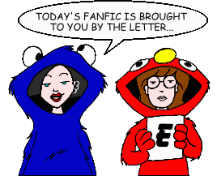
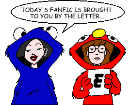

Fan Fiction
"E" by Title

Fan Fiction
"E" by Title

|
Authors: If you no longer wish for any of your stories to be posted, please send e-mail to fanfic@lawndale.net and I will remove them at once. |
| Easter Eggs Need Color By Brandon League Category: Holidays Easter weekend, 1986. Five-year-old Jane Lane gets brought home by the police. Need I say more? Written for Thea Zara's "Easter Egg Hunt." |
| Easy A (*) By The Angst Guy Category: Miscellaneous A good grade doesn't always mean that getting it was a good thing, too. |
| The Education of Dumber-Than-A-Tree By John Berry Category: School Situations Kevin is finally kicked off the team for his stupidity; guess who he gets to tutor him? Meanwhile, Quinn embarks on a quest to find the perfect name for herself after she finds out that "Quinn" is a unisex name. |
| Egg-cept Responsability By Hash Category: School Situations As a human development exercise for Ms. Barch's science class, Daria and Connor are forced to experience what it's like to be married for a week. But what they end up learning might not have anything to do with the assignment. And what was that about an egg? |
| Eight Legged Pink By Brandon League Category: Miscellaneous Quinn gets an interesting new pet, much to Daria's surprise. An entry in one of the PPMB's "Iron Chef" contests. |
| Eight Miles High (*) By The Angst Guy Category: Miscellaneous It is better sometimes to never wake up. |
| Electronic Alchemy By The Alchemist Category: Series & Multi-Part Stories (Miscellaneous) A series of stories set in lieu of the official Season 5, continuing the lives of the characters post-"Is It Fall Yet?". |
| Emancipation [Artwork] By Galen Hardesty Category: Miscellaneous Daria and Jane try to wangle some free time for Jodie, while Daria experiences an unusual natural phenomenon, as well as some other unusual stuff. |
| The Emancipation of Stacy Rowe By Yui Daoren Category: Miscellaneous Stacy's life is turned on its ear when a handsome new member of the Lawndale Lions makes her the center of his attention. |
| An Emperor's New Dress By Bacner Category: Past & Future Adventures of Andrea (the Goth girl) in college. |
| Empire Strikes Back Records By ACLI Category: Crossovers & Parodies A parody of the film "Empire Records," with a little "Star Wars" thrown into the mix. |
| End of the World By Jennie Shephard Category: Alternate History What if Quinn wasn't totally shallow, but a brain instead? Is it the world coming to an end? No, just a lot of fun, plus a few yeta acts from Jane and Quinn. |
| End Weekend, End By Daniel Suni Category: Miscellaneous Jane gets sick. Daria gets bored. Helen gets worried, and demands that Daria attend a course in positive thinking. Matter and anti-matter collide on a weekend that just drags on and on and on... |
| Enter Al Banffte By Al Banffte Category: Miscellaneous When a strange new boy arrives in Lawndale, strange things begin to happen. Who or what is this new boy, and why is he here? |
| Epiphany (*) By Nick Gaston Category: Crossovers & Parodies After a personal tragedy, Daria strikes a "furtive, underhanded blow at the nonsense of [dark] knight errantry." |
| Essay of Exile By DragonPanther Category: Crossovers & Parodies In this crossover with "Invader Zim," Zim and Dib are assigned an essay, and Zim turns to the Lawndale citizens for help. A three-part story. |
| Esteemarrs! By Shane Greentree Category: Crossovers & Parodies "Daria" in pirate form. Those seeking a cheap bootleg may be disappointed. |
| Esteeminator: The Daria Morgendorffer Chronicles By Roland "Jim" Lowery Category: Crossovers & Parodies Daria makes a metal friend at school and joins the fight to save the future. Based on the TV series "Terminator: The Sarah Connor Chronicles." |
| Esteemsters: 4chan /b/ edition (*) By The Angst Guy Category: Crossovers & Parodies The Daria episode "Esteemsters" as it would look in script form on 4chan's Random (/b/) channel. Hang on for the ride. Note: This story includes content (language, violence, or sexual situations) that may not be appropriate for some readers. |
| Eternity By Richard Lobinske Category: Sci-Fi, Fantasy & Horror After college, Daria and Tom Sloane are hired by a highly secret division of the CIA as forensic investigators of paranormal threats. While on their honeymoon, they are directed to examine strange events around a laboratory housing the remains of Neolithic lovers, buried in a last embrace over five thousand years ago. When the ancient lovers' souls are transferred to their bodies, they must learn to share bodies while the agency begins to learn about, and make plans for, these new guests. Followed by "Reaper in the Wind." |
| Ever Never: A Daria Crossover By Hikhali Category: Crossovers & Parodies A tale of a young boy who falls in love. Sappy, isn't it? A parody of the film "Ever After: A Cinderella Tale." |
| Every Hour Saved from That Eternal Silence (*) By The Angst Guy Category: Miscellaneous Astronaut Daria Morgendorffer takes one small step on the greatest voyage of her life--then discovers her ultimate destination is not the moon, but hell. |
| Everyone Goes to Nick's By CAP Category: Romance Nick plays matchmaker for his friend Trent. |
| Everything Happens for a Reason [Artwork] By Mahna Mahna Category: Romance Cupid is making disasters out of Daria and Tom's love lives... or is he? |
| Everything You Know Is Wrong! By Don Fields Category: Crossovers & Parodies In a bizzare parody of the Firesign Theatre's audio play of the same name, Daria and Jane get mixed up with a hole to the center of the Earth, alien insurance investigators, and Art Bell fanboys. |
| Everything's Cool and Froody (*) By Jill Palmer Category: Miscellaneous A cynical teenager prone to arguing with her mother is placed in Lawndale High's self-esteem class. Sound familiar? It's probably not what you think. |
| Everytime By Elle Elle Category: Miscellaneous A disturbing look at some of Daria's isolationist traits. |
| The Evil Daria Vignettes (*) By NightGoblyn and Various Authors Category: Sci-Fi, Fantasy & Horror The epic from the PPMB finally collected into one easy document, and then sensibly split back into four smaller ones so it doesn't make your browser cry. Originally running to six-hundred and eighty eight posts stretching across three threads, this collection includes only the Vignettes themselves - still in the original posted order and with titles and author credit (blame?) for the reader's convenience. Time to enjoy the Evil! |
| Exchange Students (*) By NightGoblyn Category: Alternate History What if Jake had joined the Marine Corps the way his father wanted? How would that change his little girls? What if Jane angrily rejected her family's obsession with art? Welcome to a whole new Lawndale... |
| Excuse Me? By RangerLou Category: Miscellaneous Daria awakens from a recurring nightmare. (Yes, *that* nightmare.) |
| The Exercise Project By Thomas Mikkelsen Category: Miscellaneous Helen decides that Daria and Quinn nedd to get in shape. |
| Exit Upstage Left By wierdgrrl Category: Miscellaneous Quinn and Daria's cousin Lara from New York comes to stay with the Morgandorffers and go to school at "Llllawndale High." Quinn worries that Lauren will threaten her popularity, and Daria and Jane get a big surprise when they meet her. |